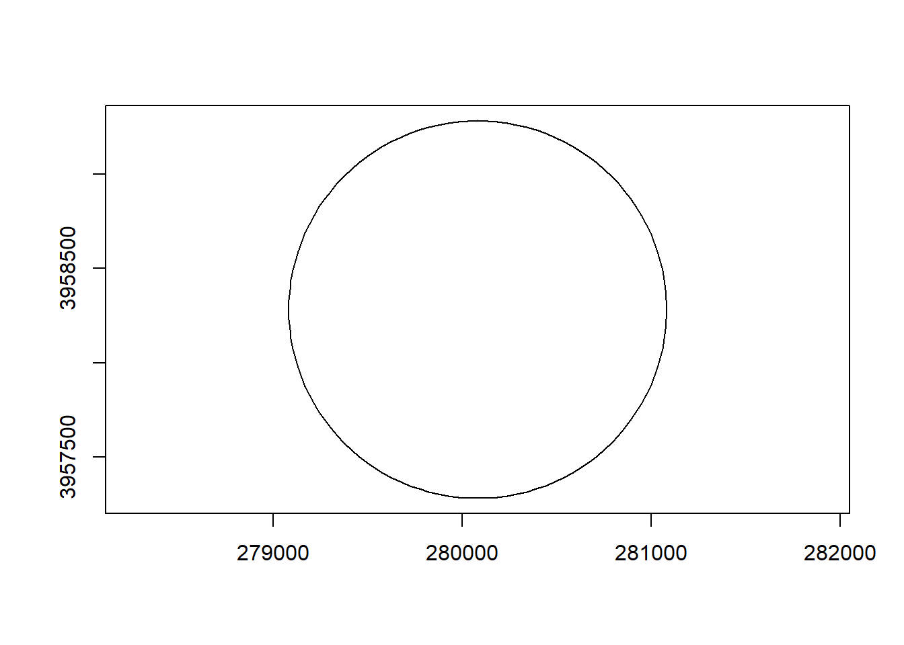
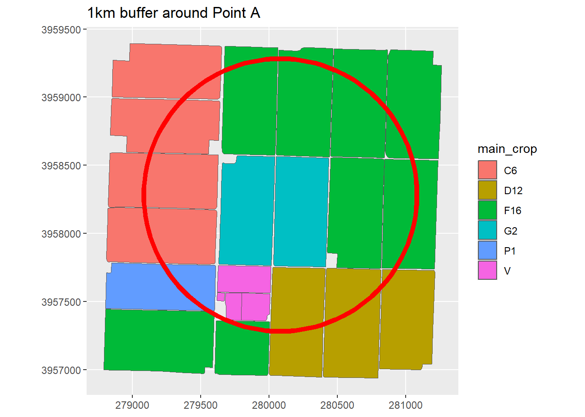
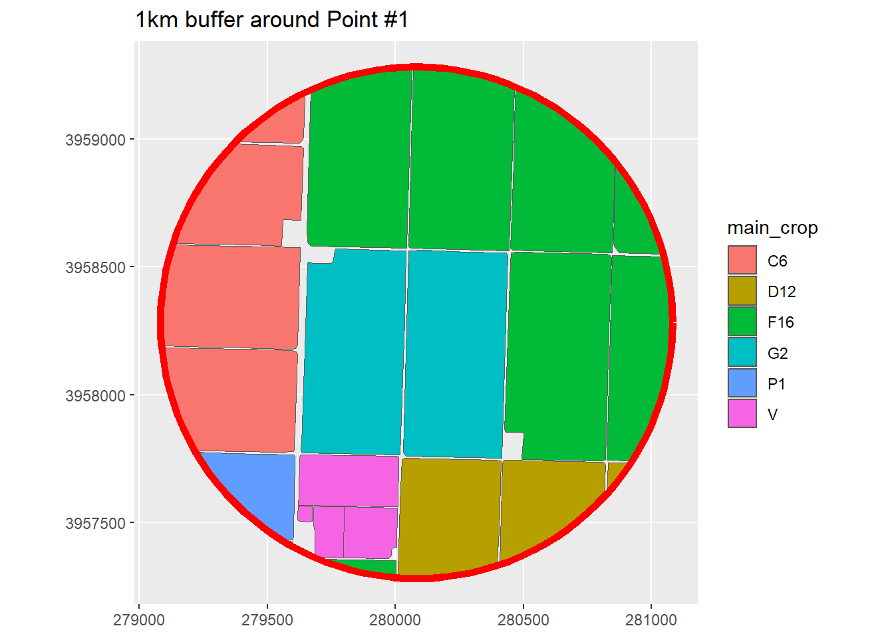
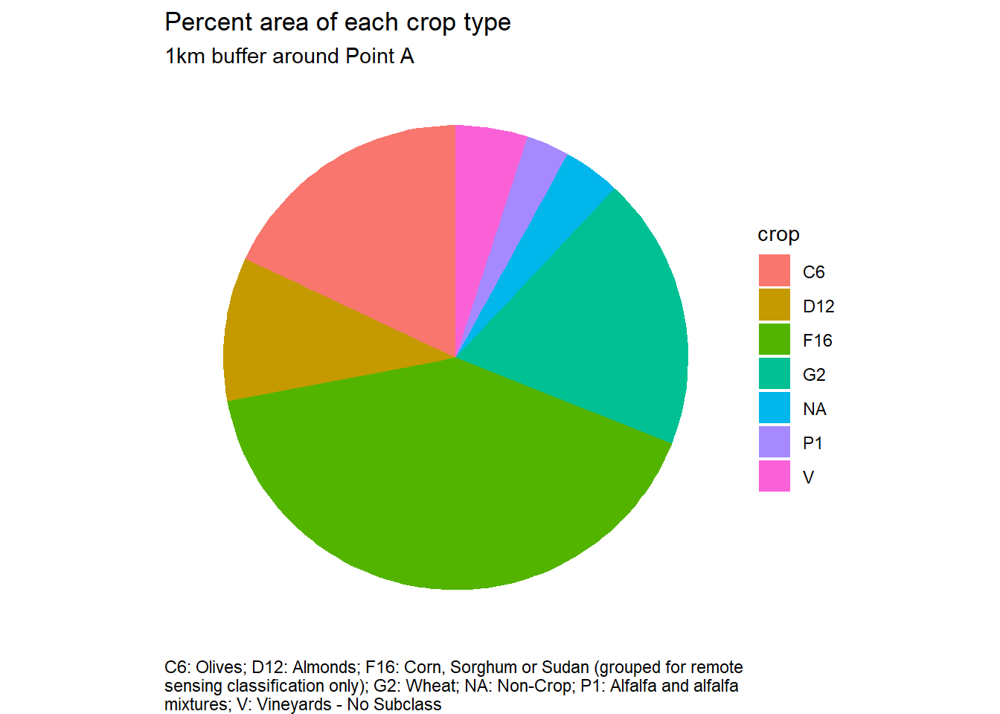

library(here)
library(sf)
library(dplyr)
library(readr)
library(leaflet)
library(ggplot2)
library(units)Summarizing Crop Distribution for a Polygon
Summary
This notebook demonstrates the code that can be used to summarize the distribution of crops around a point. It uses the 20211 Statewide Crop Mapping Layer from CA DWR. More specifically, this notebook shows how to:
- import a set of points from a CSV file
- create a spatial object from the CSV file
- select one of the points
- create a 1km buffer around the point
- import the 2021 Statewide Crop Mapping Layer from a downloaded file geodatabase for the area of the buffer
- intersect the buffer with the crop polygons
- compute for each crop the percent of the total area of the buffer
This demonstration code is intended to be educational, but can be adapted into a “production script” that chugs through a series of points and a range of buffer sizes to characterize the landscape around selected points. The methods can also be adapted for other polygons (e.g., ground water basins, counties, etc.)
Setup
We first load libraries:
Define a few EPSG codes (i.e., projections) that we’ll use later:
epsg_utm11n_wgs84 <- 32611
epsg_geo_nad83 <- 4269
epsg_geo_wgs84 <- 4326
Import points
First, we load some points from a CSV file.
farms_tbl <- read_csv("farm_pts.csv")Rows: 5 Columns: 3
── Column specification ────────────────────────────────────────────────────────
Delimiter: ","
chr (1): ptid
dbl (2): lon, lat
ℹ Use `spec()` to retrieve the full column specification for this data.
ℹ Specify the column types or set `show_col_types = FALSE` to quiet this message.farms_tbl
Importing Points
If the points are already in a GIS format (e.g., Shapefile, KML), we would import them using st_read() (and skip the next step).
Convert points to spatial object
Next, we convert this to a simple feature point layer in UTM Zone 112:
farms_sf <- st_as_sf(farms_tbl, coords = c("lon", "lat"), crs = epsg_geo_wgs84) |>
st_transform(epsg_utm11n_wgs84)
Plot these points in a leaflet map to see where they are:
leaflet(data = st_transform(farms_sf, epsg_geo_wgs84)) |>
addProviderTiles("Esri.WorldImagery") |>
leaflet::addCircleMarkers(stroke = FALSE,
fillColor = "#f00",
fillOpacity = 0.8,
popup = ~id)
Open a Connection to the 2021 Statewide Crop Mapping data
This notebook uses a local copy of the 2021 Statewide Crop Mapping saved as a file geodatabase. This copy was downloaded from the CNRA Open Data Hub and unzipped.
We are using a local copy of the crop distribution data because:
- accessing a local file geodatabase will give us the fastest performance (compared to downloading the data from the cloud, although that can also be done).
- the size of the data is manageable (the zip file is 90 MB, the unzipped GDB is 207 MB).
- the links to the online layers (i.e., Map Service) seem to be broken (or require a login), so there is not much alternative.
Create the connection and view the layers:
dwr_cropmapping_gdb <- "i15_Crop_Mapping_2021_GDB/i15_Crop_Mapping_2021.gdb"
dir.exists(dwr_cropmapping_gdb)[1] TRUEst_layers(dwr_cropmapping_gdb)Driver: OpenFileGDB
Available layers:
layer_name geometry_type features fields crs_name
1 i15_Crop_Mapping_2021 3D Measured Multi Polygon 431145 56 NAD83
Exploring the Statewide Crop Distribution Layer
The best way to explore the Statewide Crop Distribution Layer is to open it up in ArcGIS Pro. The zip file from DWR contains both a file geodatabase as well as an ArcGIS Pro layer file (CropMapping2021_Legend.lyrx). Double-click the layer file to open it up in ArcGIS Pro. You will probably need to reestablish the link to the data (layer properties > source), but then you’re good to go.
The file geodatabase appears to be the only source for ‘metadata’. In other words, DWR has not published the metadata anywhere else, however copy of the metadata for the 2021 crop distribution data can also be found here. However even the ‘metadata’ does not provide a field-by-field description, but you can make educated guesses by looking at the field properties and domains (see below).
Exploring the Data in ArcGIS Pro
Reading the metadata and exploring the data more thoroughly in ArcGIS Pro is an extremely good idea if you’ll be using these data for research. In addition to the MAIN_CROP field (which is all we’re using in this notebook), there are 56 other fields that contain useful information including multi-cropping characteristics, crop category (as opposed to crop type), year the crop was established (i.e., for perennial crops), whether the classification was updated / revised by DWR, notes from the analyst, etc.
Which attribute field contains ‘the crop’?
The attribute table for the Statewide Crop Mapping layer has 57 fields. Determining which field has the “crop” name requires some sleuthing, as there are several candidates whose name suggest it might be the crop name. DWR unfortunately does not publish a data dictionary for the data, but if you open the file geodatabase in ArcGIS Pro you can see i) the ‘domains’ (list of codes and their descriptions used in several fields), and ii) descriptive metadata that contains clues about the methodology.
The code in this notebook only imports 5 of the 57 fields. The field we will use below as “the crop” is MAIN_CROP, which the metadata describes as:
A new column for the 2019, 2020, and 2021 datasets is called ‘MAIN_CROP’. This column indicates which field Land IQ identified as the main season crop for the WY representing the crop grown during the dominant growing season for each county.
Figuring out the codes
Many of the attribute fields in the crop distribution layer contain codes or abbreviations. The descriptions that go with these codes are not documented anywhere online, unfortunately. However if you open the File Geodatabase in ArcGIS Pro, you view the ‘domains’ (which is what ESRI calls code lists used in attribute tables). For convenience, the domains have been also exported as tables saved in another file geodatabase: Crop_Mapping_2021_domains.gdb.
domains_gdb <- "Crop_Mapping_2021_domains.gdb"
dir.exists(domains_gdb)[1] TRUEst_layers(domains_gdb)Driver: OpenFileGDB
Available layers:
layer_name geometry_type features fields crs_name
1 allClas_dom_5 NA 27 2 <NA>
2 allCropType_dom_3 NA 59 2 <NA>
3 AllIrrigTypA_dom NA 3 2 <NA>
4 AllIrrigTypB_dom NA 17 2 <NA>
5 AllMultiUse_dom NA 6 2 <NA>
6 allNotes_dom NA 129 2 <NA>
7 AllPCNT_dom NA 101 2 <NA>
8 allSpecCond_dom_2 NA 20 2 <NA>
9 allSubclass_dom_1 NA 33 2 <NA>
All 9 of these ‘domains’ are code lists used in one or more of the 57 fields in the attribute table.
Import the Crop Type codes
Let’s import the “crop types” domain:
croptypes_tbl <- st_read(domains_gdb,
layer = "allCropType_dom_3",
as_tibble = TRUE,
quiet = TRUE) |>
rename(code = Code, description = Description)
knitr::kable(croptypes_tbl, format = "html")| code | description |
|---|---|
| **** | **** |
| C | Citrus and Subtropical - No Subclass |
| C4 | Dates |
| C5 | Avocados |
| C6 | Olives |
| C7 | Subtropical Fruits Misc. |
| C8 | Kiwis |
| C10 | Eucalyptus |
| D1 | Apples |
| D2 | Apricots |
| D3 | Cherries Cherries |
| D5 | Peaches and Nectarines |
| D6 | Pears |
| D7 | Plums |
| D8 | Prunes |
| D10 | Deciduous - Misc. |
| D12 | Almonds |
| D13 | Walnuts |
| D14 | Pistachios |
| D15 | Pomegranates |
| D17 | Pecans |
| F1 | Cotton |
| F2 | Safflower |
| F5 | Sugar beets |
| F10 | Beans (dry) |
| F11 | Field Misc. |
| F12 | Sunflowers |
| F16 | Corn, Sorghum or Sudan (grouped for remote sensing classification only) |
| G2 | Wheat |
| G6 | Grain and Hay - Misc. |
| I1 | Idle - Land not cropped in current or prior year, but within last 3 yrs. |
| I4 | Idle - Long Term - land consistently idle for four or more years |
| P1 | Alfalfa and alfalfa mixtures |
| P3 | Pasture - Mixed |
| P4 | Pasture - Native Improved |
| P5 | Pasture - Induced High Water |
| P6 | Pasture - Miscellaneous Grasses |
| P7 | Pasture - Turf Farms |
| R1 | Rice |
| R2 | Rice - Wild |
| T4 | Cole crops (mixture of T22-T25) |
| T6 | Carrots |
| T9 | Melons, Squash, and Cucumbers |
| T10 | Onions and Garlic |
| T12 | Potatoes |
| T13 | Sweet Potatoes |
| T16 | Flowers, nursery and Christmas Tree Farms |
| T18 | Truck Crops - Misc. |
| T19 | Bushberries |
| T20 | Strawberries |
| T21 | Peppers (Chili, Bell, etc.) |
| T27 | Greenhouse |
| T30 | Lettuce or Leafy Greens (grouped for remote sensing classification only) |
| T32 | Tomatoes (all) |
| U | Urban - Unspecified Residential, Commercial, Industrial |
| UL2 | Urban Landscape - Golf Course Irrigated |
| V | Vineyards - No Subclass |
| X | Not cropped, or unclassified at the time of remote-sensing analysis. Idle status not determined |
| YP | Young Perennial (grouped for remote sensing or when CLASS C, D or V is not determined) |
Create a buffer
Next, we’ll create a buffer around one of the points to use as the ‘cookie cutter’ for the crop distribution layer. For the rest of this notebook, we’ll be working with just one of the points (but this can be easily adapted by creating a loop).
Set a variable for the selected point:
i <- 1
Make a 1km buffer around the ith point:
onefarm_buf1k <- farms_sf |>
slice(i) |>
st_buffer(dist = 1000)
onefarm_buf1k
See what that looks like:
plot(onefarm_buf1k$geometry, axes = TRUE)
Compute the area of the buffer (we’ll need this further down when we compute the percent area of each crop):
(buff_area_m2 <- st_area(onefarm_buf1k))3140157 [m^2]
Import the Crop Distribution Data
Next, we’ll import the crop distribution layer (which is a polygon layer). To save time and memory, we’ll only import polygons that intersect the buffer area by specifying a spatial filter when we call st_read().
To include a spatial filter when we import the data, we need to define the bounding box and express it as WKT3 (i.e., a character object). Note that we also have to transform the bounding box to geographic coordinates NAD83, because that’s the CRS of the crop distribution layer.
bbox_wkt <- st_bbox(onefarm_buf1k) |>
st_as_sfc() |>
st_transform(epsg_geo_nad83) |>
st_as_text()
bbox_wkt[1] "POLYGON ((-119.4428 35.73477, -119.4207 35.73521, -119.4212 35.75323, -119.4433 35.75278, -119.4428 35.73477))"
Now we can import the crop distribution layer for the bounding box:
crpdst_bbox_sf <- st_read(dsn = dwr_cropmapping_gdb,
layer = "i15_Crop_Mapping_2021",
wkt_filter = bbox_wkt) |>
st_transform(epsg_utm11n_wgs84) |>
select(main_crop = MAIN_CROP, class2 = CLASS2, yr_planted = YR_PLANTED,
data_status = DataStatus, multiuse = MULTIUSE) |>
left_join(croptypes_tbl, by = c("main_crop" = "code"))Reading layer `i15_Crop_Mapping_2021' from data source
`D:\GitHub\sandbox\crop_dist\cropdist_zonalstats\i15_Crop_Mapping_2021_GDB\i15_Crop_Mapping_2021.gdb'
using driver `OpenFileGDB'
Simple feature collection with 22 features and 56 fields
Geometry type: MULTIPOLYGON
Dimension: XYZ
Bounding box: xmin: -119.446 ymin: 35.73202 xmax: -119.4192 ymax: 35.7538
z_range: zmin: 0 zmax: 0
Geodetic CRS: NAD83head(crpdst_bbox_sf)
Next, we can overlay the buffer and the cropped crop layer:
ggplot(crpdst_bbox_sf, aes(fill = main_crop)) +
geom_sf() +
geom_sf(data = onefarm_buf1k,
colour = "red",
fill = NA,
lwd = 2) +
coord_sf(datum = st_crs(epsg_utm11n_wgs84)) +
labs(title = paste0("1km buffer around Point ", farms_sf$ptid[i]))
Display a “legend”:
crops_in_this_area <- unique(crpdst_bbox_sf$main_crop)
croptypes_tbl |> filter(code %in% crops_in_this_area)
Intersect the crop polygons with the buffer
Now we can take the intersection:
crops_buf_sf <- crpdst_bbox_sf |>
st_intersection(onefarm_buf1k) |>
mutate(area_m2 = st_area(Shape)) |>
select(-description) |>
relocate(area_m2, .before = Shape) |>
relocate(ptid, .before = 1)Warning: attribute variables are assumed to be spatially constant throughout
all geometriescrops_buf_sf |> head()
Plot these together:
ggplot(crops_buf_sf, aes(fill = main_crop)) +
geom_sf() +
geom_sf(data = onefarm_buf1k,
colour = "red",
fill = NA,
lwd = 2) +
coord_sf(datum = st_crs(epsg_utm11n_wgs84)) +
labs(title = paste0("1km buffer around Point #", i))
This looks good!
Compute the percent area of each crop
We can now compute the percent of the buffer zone area for each crop:
crop_prcntbuf_tbl <- crops_buf_sf |>
st_drop_geometry() |>
group_by(main_crop) |>
summarise(total_area = round(sum(area_m2)), .groups = "drop") |>
mutate(prcnt_buf = round(as.numeric(total_area / buff_area_m2), 2)) |>
left_join(croptypes_tbl, by = c("main_crop" = "code")) |>
select(crop = main_crop, description = description, total_area, prcnt_buf) |>
arrange(desc(prcnt_buf))
crop_prcntbuf_tbl
View the total percent area (should be close to 1.0):
crop_prcntbuf_tbl$prcnt_buf |> sum()[1] 0.96
Add the ‘non-crop’ category:
noncrop_area <- crop_prcntbuf_tbl$prcnt_buf |> sum()
nnocrop_prct <-
crop_prcntbuf_nocrop_tbl <- crop_prcntbuf_tbl |>
bind_rows(tibble(crop = "NA",
description = "Non-Crop",
total_area = round(buff_area_m2 - sum(crop_prcntbuf_tbl$total_area)),
prcnt_buf = 1 - sum(crop_prcntbuf_tbl$prcnt_buf)))
crop_prcntbuf_nocrop_tbl
Make a pie chart:
caption_chr <- crop_prcntbuf_nocrop_tbl |>
arrange(crop) |>
mutate(crop_description_chr = paste(crop, description, sep = ": ")) |>
pull(crop_description_chr) |>
paste(collapse = "; ") |>
strwrap(width = 80) |>
paste(collapse = "\n")
ggplot(crop_prcntbuf_nocrop_tbl, aes(x = "", y = prcnt_buf, fill = crop)) +
geom_bar(stat = "identity", width = 1) +
coord_polar("y", start = 0) +
theme_void() +
labs(title = "Percent area of each crop type",
subtitle = paste0("1km buffer around Point ", farms_sf$ptid[i]),
caption = caption_chr) +
theme(plot.caption = element_text(hjust = 0))
Next Steps
The next step could be to wrap this in a ‘production script’ that:
- loops through multiple points
- loops through multiple buffer distances
- spits out a table that has the combined percent areas for all points and buffers (and can be easily reshaped or filtered for further analyses)
Footnotes
The crop distribution layer is updated every year, but as of the date of this notebook 2021 was the most recent year that was labeled as “final”.↩︎
Using a projected CRS is required in this case, because we’re going to create buffers around each point using a radius expressed in real-world-coordinates.↩︎
Well Known Text↩︎